Parametric stationary covariance models¶
 be a multivariate
stationary normal process where
be a multivariate
stationary normal process where  . The process
is supposed to be zero mean. It is entirely defined by its covariance
function
. The process
is supposed to be zero mean. It is entirely defined by its covariance
function
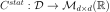
, defined by for all
for all  .
. . In the
discrete case,
. In the
discrete case,  is a lattice.
is a lattice. .
.The multivariate exponential model
This model defines the covariance function by:
(1)¶
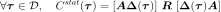
where ![\mat{R} \in \mathcal{M}_{d \times d}([-1, 1])](../../_images/math/96573c648dd73976512a65b50219ed4a0800d7e7.svg) is a
correlation matrix,
is a
correlation matrix,
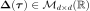
is defined by:(2)¶
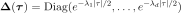
and  is defined by:
is defined by:
(3)¶
with
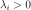
and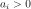
for any .
.
We call  the amplitude vector and
the amplitude vector and
 the scale vector.
The expression of is the combination of:
the scale vector.
The expression of is the combination of:
the matrix
 that models the spatial correlation
between the components of the process
that models the spatial correlation
between the components of the process  at any vertex
at any vertex
 (since the process is stationary):
(since the process is stationary):(4)¶
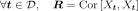
the matrix
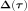
that models the correlation between the marginal random variables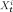
and :
:
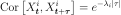
the matrix
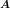
that models the variance of each marginal random variable:
This model is such that:
(5)¶
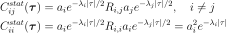
It is possible to define the exponential model from the spatial
covariance matrix  rather than the correlation
matrix :
rather than the correlation
matrix :
(6)¶
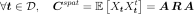
API:
See
ExponentialModelSee
MaternModel